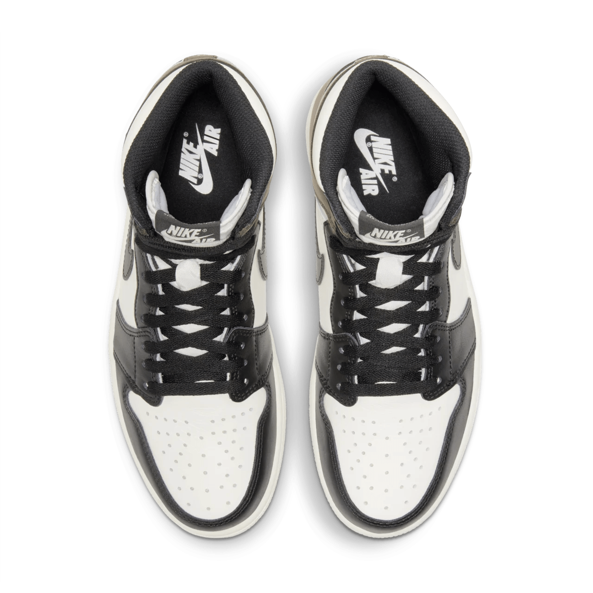
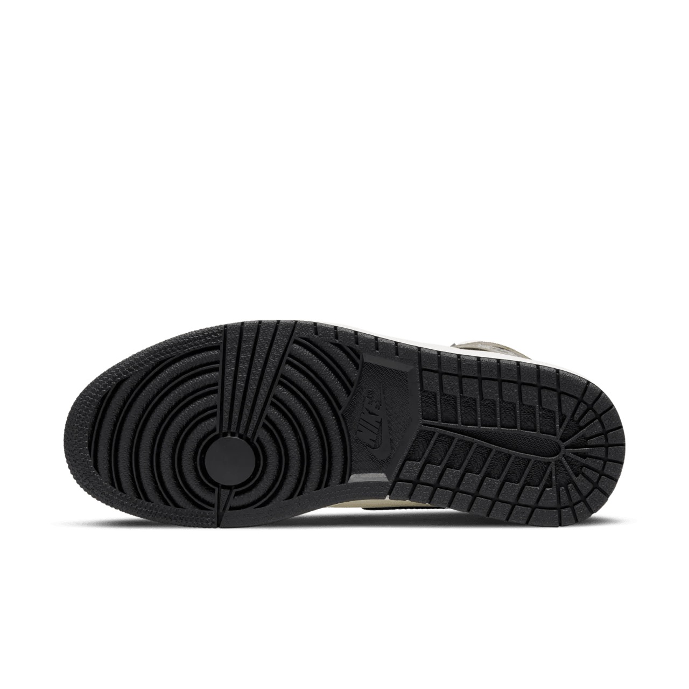

The Air Jordan 1 "Dark Mocha" is a standout addition to the Air Jordan legacy, blending classic design with a modern twist. Released in 2020, this sneaker draws inspiration from the iconic Air Jordan 1 silhouette, originally launched in 1985, which has been a staple in both basketball and streetwear culture for decades.
The "Dark Mocha" colorway features a combination of premium leather materials, with a sleek white base accented by dark mocha brown overlays. The color palette pays homage to the beloved "Travis Scott" Jordan 1, while maintaining its unique identity. This tonal contrast not only enhances its visual appeal but also offers versatility, making it suitable for various outfits and occasions.
In terms of comfort and performance, the Air Jordan 1 "Dark Mocha" stays true to its heritage, equipped with a padded collar and a cushioned midsole for support during wear. Its high-top design provides excellent ankle support, making it a favorite among both athletes and sneaker enthusiasts.
Beyond its performance attributes, the "Dark Mocha" has become a cultural phenomenon, embraced by influencers and celebrities alike. Its combination of timeless design, quality craftsmanship, and modern aesthetics has solidified its status as a must-have sneaker in contemporary collections, embodying the ongoing legacy of the Air Jordan brand.
 